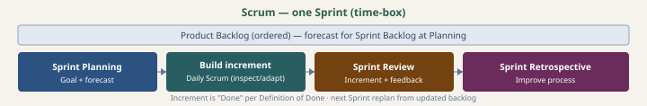

Scrum
Time-boxed Sprints, accountabilities, events, artifacts — and how they map to this blueprint and agentic workflows.
Process overview
- Accountabilities: Product Owner (value, backlog order), Developers (quality increment), Scrum Master (Scrum as defined, impediments).
- Sprint container: fixed length ≤ one month; all events happen inside it toward a Sprint Goal and a Done increment.
- Engineering tracking: link commits to work-unit ids; ceremonies use ALM + aggregates — not git alone for capacity or story points.

Authoritative sources
Each entry: what the link is and why this blueprint points to it—you can skip opening it if you already know the source.
- The Scrum GuideOfficial definition of Scrum (roles, events, artifacts)—the authority for mapping this blueprint to Scrum.
- Scrum.org — What is Scrum?Training org’s intro and learning paths; complements the Guide, not a second standard.
- Agile Alliance — Scrum glossaryShort glossary entry plus community context—shared vocabulary alongside the Guide.
In this blueprint
Scrum cadence fits Phases A–F in SDLC.md: backlog and specs in docs/requirements/, increments in build, release in Phase F. Ceremonies need data from your ALM and tracker — not from git alone.
Agentic SDLC: human capacity and Definition of Done still apply; agents change throughput, not accountability for the Sprint Goal or stakeholder acceptance.
Deep dive (prescriptive)
Subchapters link to Markdown with roles, foundation fit, ceremony I/O & agendas, and process maps (Mermaid). Start at the package index: scrum/README.md.
Full guide (canonical)
Executive summary and adoption notes: scrum.md. Prescriptive encyclopedia: scrum/README.md and files above.